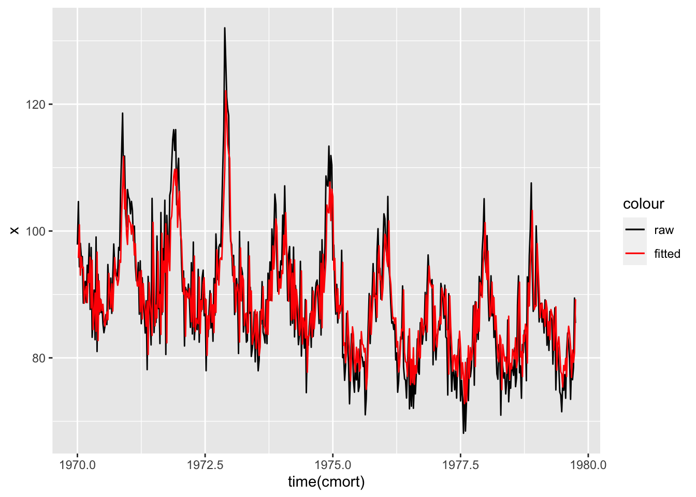

Code
# acf, ccf, pacfAutoregression (AR)
Moving Average (AM)
Vector Autoregression (VAR)
HMM
State Space Models
Multivariate autoregression (MAR)
stats
KalmanLike, KalmanRun, KalmanSmooth, KalmanForecastdlmKFASSee also State Space Models in R.
Courses
# acf, ccf, pacfAutoregressive of order 1 is the simplest time series you can have.
\begin{aligned} Y_t = Y_{t-1} + \varepsilon_t \end{aligned}
# AR models
sim_ar <- tibble(p = 1:3,
ar = list(.7,
c(.7,-.3),
c(.7, -.3, .5)),
n = 200) %>%
rowwise() %>%
mutate(y = list(arima.sim(list(ar = ar), n = 200)),
x = list(time(y)))
sim_ar %>% unnest(c(x, y)) %>%
ggplot(aes(x = x, y = y)) +
geom_line() +
facet_grid(p~.)# ma processes
sim_ma <- tibble(q = 1:3,
ma = list(.7,
c(.7,-.3),
c(.7, -.3, .5)),
n = 200) %>%
rowwise() %>%
mutate(y = list(arima.sim(list(ma = ma), n = 200)),
x = list(time(y))) %>%
ungroup()
sim_ma %>% unnest(c(x, y)) %>%
ggplot(aes(x = x, y = y)) +
geom_line() +
facet_grid(q~.)
We just examine the cardiovascular mortality from the LA Pollution study. These are average weekly cv mortality rates from astsa package.
# ?cmort
x <- cmort %>% as.numeric()
x1 <- x %>% lag()
# yt = u + beta * yt-1
cmort_lm <- lm(x~x1)
cbind(coef(cmort_lm)[1] + coef(cmort_lm)[2] * x1,
c(NA, fitted(cmort_lm)),
c(NA, predict(cmort_lm))) %>%
head() # fitted/predicted values match up [,1] [,2] [,3]
NA NA NA
2 95.73811 95.73811 95.73811
3 100.97814 100.97814 100.97814
4 93.04478 93.04478 93.04478
5 95.89246 95.89246 95.89246
6 94.19466 94.19466 94.19466qplot(time(cmort), x, geom = "line", color = "black") +
geom_line(aes(y = c(NA, fitted(cmort_lm)), color = "red")) +
scale_color_manual(values = c("black", "red"),
label = c("raw", "fitted"))Don't know how to automatically pick scale for object of type ts. Defaulting to continuous.Warning: Removed 1 row(s) containing missing values (geom_path).AirPassengers %>% plot()
sarima(AirPassengers, d = 1, p = 2, q = 0)initial value 3.522169
iter 2 value 3.456359
iter 3 value 3.447683
iter 4 value 3.447001
iter 5 value 3.447000
iter 6 value 3.447000
iter 6 value 3.447000
iter 6 value 3.447000
final value 3.447000
converged
initial value 3.441124
iter 2 value 3.441115
iter 3 value 3.441115
iter 4 value 3.441114
iter 4 value 3.441114
iter 4 value 3.441114
final value 3.441114
converged
$fit
Call:
arima(x = xdata, order = c(p, d, q), seasonal = list(order = c(P, D, Q), period = S),
xreg = constant, transform.pars = trans, fixed = fixed, optim.control = list(trace = trc,
REPORT = 1, reltol = tol))
Coefficients:
ar1 ar2 constant
0.3792 -0.2314 2.4075
s.e. 0.0823 0.0834 3.0636
sigma^2 estimated as 973.4: log likelihood = -694.99, aic = 1397.98
$degrees_of_freedom
[1] 140
$ttable
Estimate SE t.value p.value
ar1 0.3792 0.0823 4.6065 0.0000
ar2 -0.2314 0.0834 -2.7767 0.0062
constant 2.4075 3.0636 0.7858 0.4333
$AIC
[1] 9.77605
$AICc
[1] 9.777257
$BIC
[1] 9.858927# cardiovascular mortality, temperature and particulates in LA county, weekly.
la <- cbind(cmort, tempr, part)
# visualization
# ts.plot(cmort, tempr, part, col = 1:3) # base r of autoplot
autoplot(la, color = "black") + facet_grid(series~., scales = "free_y")
la_var1 <- VAR(la, p = 1, type = "both") # w/ trend
la_var2 <- VAR(la, p = 2, type = "both") # w/ trend
# coefficient matrix
sapply(coef(la_var1),rlang::as_function(~.x[,"Estimate"])) cmort tempr part
cmort.l1 0.46482370 -0.244046444 -0.124774858
tempr.l1 -0.36088790 0.486595619 -0.476526201
part.l1 0.09941503 -0.127660994 0.581308364
const 73.22729188 67.585597743 67.463501275
trend -0.01445884 -0.006912455 -0.004650001# vcov of coef estimates
sapply(coef(la_var1), rlang::as_function(~round(.x[,"Std. Error"], 3))) cmort tempr part
cmort.l1 0.037 0.042 0.079
tempr.l1 0.032 0.037 0.069
part.l1 0.019 0.022 0.041
const 4.834 5.542 10.399
trend 0.002 0.002 0.004# estimated covariance of errors
summary(la_var1)$covres cmort tempr part
cmort 31.171944 5.974621 16.65448
tempr 5.974621 40.964945 42.32335
part 16.654476 42.323345 144.26025la_var1_const <- VAR(la, p = 1, type = "const")
sapply(coef(la_var1_const),rlang::as_function(~.x[,"Estimate"])) cmort tempr part
cmort.l1 0.60149346 -0.1787076 -0.08082151
tempr.l1 -0.30946101 0.5111817 -0.45998718
part.l1 0.07096225 -0.1412636 0.57215788
const 54.94579126 58.8456142 61.58412402#
la_ols <- ar.ols(la, order.max = 1, demean = FALSE, intercept = TRUE)
# matches constant VAR coefficients
rbind(t(la_ols$ar[1,,]),
const = la_ols$x.intercept) cmort tempr part
cmort 0.60149346 -0.1787076 -0.08082151
tempr -0.30946101 0.5111817 -0.45998718
part 0.07096225 -0.1412636 0.57215788
const 54.94579126 58.8456142 61.58412402la %>% melt(c("time", "series")) %>%
ggplot(aes(time, value)) +
geom_line(color = "black") +
geom_line(data = fitted(la_var1) %>% melt(c("time", "series")),
mapping = aes(time, value, color = "red"), alpha= .6) + # var1
geom_line(data = fitted(la_var1_const) %>% melt(c("time", "series")),
mapping = aes(time, value, color = "blue"), alpha = .6) + # var1 const
geom_line(data = fitted(la_var2) %>% melt(c("time", "series")),
mapping = aes(time, value, color = "green"), alpha = .6) + # var2
scale_color_manual(values = c("red", "blue", "green"),
labels = c("var1", "var1_const", "var2")) +
facet_grid(series~.)From looking at the models, they’re quite difficult to tell which model is fitting better than the others.
# var estimates using lm
# Matrix of time series
la_mat <- la %>% `class<-`("matrix")
la_var1_manual <- lm(la_mat ~ cbind(lag(la_mat), 1:nrow(la_mat))) # w/ trend
la_var1_const_manual <- lm(la_mat ~ lag(la_mat)) # const# coefs match
sapply(coef(la_var1),rlang::as_function(~.x[,"Estimate"])) cmort tempr part
cmort.l1 0.46482370 -0.244046444 -0.124774858
tempr.l1 -0.36088790 0.486595619 -0.476526201
part.l1 0.09941503 -0.127660994 0.581308364
const 73.22729188 67.585597743 67.463501275
trend -0.01445884 -0.006912455 -0.004650001coef(la_var1_manual)[c(2:4, 1, 5),] %>% # reorder to match
`rownames<-`(c("cmort", "tempr", "part", "const", "trend")) cmort tempr part
cmort 0.46482370 -0.244046444 -0.124774858
tempr -0.36088790 0.486595619 -0.476526201
part 0.09941503 -0.127660994 0.581308364
const 73.22729188 67.585597743 67.463501275
trend -0.01445884 -0.006912455 -0.004650001# var matches
# SSE / n-r-p
# nobs - coefs_estimated - VAR_order
crossprod(la_var1_const_manual$residuals) / (nrow(la_mat) - la_var1_const_manual$rank - 1) # 503 cmort tempr part
cmort 34.420060 7.545224 17.68590
tempr 7.545224 41.640053 42.74813
part 17.685898 42.748133 144.31580summary(la_var1_const)$covres cmort tempr part
cmort 34.420060 7.545224 17.68590
tempr 7.545224 41.640053 42.74813
part 17.685898 42.748133 144.31580# order selection
VARselect(la) # selects 2 by BIC$selection
AIC(n) HQ(n) SC(n) FPE(n)
9 5 2 9
$criteria
1 2 3 4 5 6
AIC(n) 11.84541 11.35895 11.32363 11.28376 11.23095 11.20946
HQ(n) 11.88523 11.42864 11.42318 11.41318 11.39023 11.39861
SC(n) 11.94687 11.53651 11.57728 11.61351 11.63679 11.69140
FPE(n) 139442.85952 85730.12941 82755.88760 79522.85813 75434.43083 73833.93231
7 8 9 10
AIC(n) 11.21508 11.19717 11.17261 11.17843
HQ(n) 11.43409 11.44604 11.45134 11.48703
SC(n) 11.77311 11.83130 11.88283 11.96475
FPE(n) 74254.62493 72942.17171 71179.59211 71604.50745acf(resid(la_var2), 52)$acf
, , 1
[,1] [,2] [,3]
[1,] 1.0000000000 0.217879438 0.277509279
[2,] 0.0190479748 0.005389606 0.005820489
[3,] 0.0196665705 0.029266506 0.057572004
[4,] 0.0018750976 0.113509001 0.072168281
[5,] 0.0370667228 0.089215447 0.089481560
[6,] 0.0234497703 0.006534372 0.041550540
[7,] 0.0002439599 -0.020245959 0.015288896
[8,] -0.0201621665 -0.014605120 0.028696187
[9,] -0.0717493834 -0.047291658 -0.055464437
[10,] 0.0488793637 -0.008198369 0.021221599
[11,] -0.0695031498 -0.080878807 -0.004731138
[12,] -0.0070995080 -0.074345678 -0.011980420
[13,] 0.0282316571 -0.014114181 -0.014007958
[14,] -0.0198756141 -0.034144315 0.051026255
[15,] -0.0443005551 -0.038874943 -0.081377952
[16,] 0.0786827878 -0.059140216 -0.031402333
[17,] -0.0327084309 -0.041759473 -0.016714248
[18,] 0.0108442536 0.022255941 0.040101939
[19,] 0.0043285647 -0.062265045 -0.027016343
[20,] -0.0554667399 0.022056093 0.037211470
[21,] 0.0079066206 -0.018238253 -0.007438298
[22,] 0.0314774049 -0.040331764 -0.149078216
[23,] 0.0096106673 -0.082998640 -0.047516759
[24,] -0.0025419428 0.003317043 0.017429386
[25,] 0.0539863170 0.032757468 -0.003150329
[26,] -0.0005172218 0.041461399 -0.004494827
[27,] 0.0127625494 -0.014332058 -0.028122241
[28,] 0.0904734843 0.040357750 -0.047025945
[29,] -0.0746643793 0.015222129 -0.044827848
[30,] -0.0008245447 -0.038980932 -0.034558792
[31,] -0.0520697165 0.073548481 -0.017026157
[32,] 0.0304587464 -0.022986878 -0.024226714
[33,] -0.0141854337 -0.064576026 -0.056280760
[34,] -0.0070769444 0.077901477 -0.040394100
[35,] -0.0362246932 -0.014366382 -0.060734195
[36,] -0.0214401093 -0.014338261 -0.030299110
[37,] -0.0008471980 -0.068583531 -0.017670940
[38,] -0.0006026269 -0.019236217 -0.043214529
[39,] 0.0064111064 0.002799474 0.039626533
[40,] -0.0043898669 0.034082897 -0.012423884
[41,] -0.0583439171 -0.002440935 0.034561440
[42,] 0.0136243581 -0.033637019 0.027505399
[43,] -0.0033203555 -0.024584074 -0.024374319
[44,] -0.0537574770 -0.059025968 -0.021135711
[45,] 0.0030748770 0.027478454 0.056947794
[46,] -0.0152810216 -0.032749931 -0.025585528
[47,] -0.0075957603 -0.039362742 0.053481937
[48,] 0.0532566114 -0.004024262 0.070240327
[49,] 0.0235818271 0.003943218 -0.018320176
[50,] -0.0474990754 0.062016271 0.047488310
[51,] -0.0334291892 0.032924414 0.045649735
[52,] 0.0451385770 0.108830728 0.103113081
[53,] 0.0016785953 -0.030510828 -0.015254719
, , 2
[,1] [,2] [,3]
[1,] 0.2178794381 1.0000000000 5.998217e-01
[2,] -0.0069134627 -0.0273153464 -2.028058e-02
[3,] -0.0417396384 -0.0732641900 -5.746080e-02
[4,] -0.0365251777 -0.0191031871 -5.234533e-03
[5,] 0.1223110978 0.0997388030 -3.702000e-02
[6,] -0.0426267519 0.0013077690 7.279985e-02
[7,] 0.0008907663 0.0168402620 8.611434e-02
[8,] 0.0527425268 -0.0236969942 -1.401886e-02
[9,] 0.0329738376 0.0578341857 4.853311e-02
[10,] 0.0008613065 0.0881269759 6.528484e-02
[11,] 0.0038643703 -0.0193190571 5.039434e-02
[12,] -0.0322386983 -0.0849282312 -3.180028e-02
[13,] -0.0337960274 -0.1018435407 -4.181919e-02
[14,] 0.0383478236 -0.0263751966 6.256511e-02
[15,] 0.0530821002 -0.0604857546 -4.390368e-03
[16,] -0.0578959149 -0.0405959048 2.986441e-02
[17,] -0.1207562981 -0.0172022414 4.496452e-02
[18,] 0.0309632879 0.0176564288 -1.277802e-05
[19,] 0.0458044264 -0.0082539630 -2.952468e-03
[20,] 0.0181248335 -0.0458729285 2.196671e-02
[21,] 0.0341990752 -0.0128123086 5.801552e-02
[22,] -0.0318799968 0.0017036440 -4.847752e-02
[23,] 0.0015451698 -0.0791214645 -7.364551e-02
[24,] 0.1330538448 0.0298501082 6.925756e-02
[25,] 0.0009457457 0.0770053571 2.507865e-02
[26,] 0.0109719963 0.0405010344 -1.796386e-02
[27,] 0.0031538570 0.0078040045 -3.669959e-02
[28,] 0.1218428831 0.0390931973 1.646810e-02
[29,] 0.0119989667 -0.0337334222 -7.647781e-02
[30,] 0.0193617959 0.0084917093 -5.090994e-02
[31,] -0.0902243555 0.0195814082 -1.051971e-02
[32,] 0.0073009931 -0.0535270412 -7.326326e-02
[33,] 0.0096090917 -0.0350304718 -4.321136e-02
[34,] -0.0481614893 0.0380136660 -2.507569e-02
[35,] -0.0305350325 0.0607175363 1.222326e-02
[36,] -0.0572740455 -0.1200585756 -7.296693e-02
[37,] -0.0847362741 -0.1160121279 -7.261332e-02
[38,] -0.0768652106 0.0017602589 -8.082381e-02
[39,] 0.0523430919 0.0006355169 1.791517e-02
[40,] -0.0442097337 -0.0676960291 -3.356747e-02
[41,] 0.0032764001 -0.0343545757 5.942883e-03
[42,] -0.0015313453 -0.0959785808 -8.464231e-02
[43,] -0.0724475785 0.0561233233 2.837262e-02
[44,] -0.0374797220 0.0378247513 4.592497e-02
[45,] 0.0672385341 -0.0004920405 -6.144555e-03
[46,] -0.0198744796 -0.0468162051 -1.651516e-02
[47,] -0.0003644189 0.0043254720 -2.643725e-03
[48,] 0.0696476317 0.1028146531 6.472267e-02
[49,] -0.0011331338 0.0738081817 5.243119e-03
[50,] 0.1348519820 0.0142999698 5.172204e-02
[51,] 0.0356162974 0.0924132277 9.607002e-02
[52,] 0.0219433194 0.0778897000 5.430037e-02
[53,] -0.0167431902 0.0649301370 -1.286292e-02
, , 3
[,1] [,2] [,3]
[1,] 0.277509279 5.998217e-01 1.0000000000
[2,] -0.005606983 -6.272803e-03 -0.0718869340
[3,] -0.050471197 -2.927774e-02 -0.1044093310
[4,] -0.051476471 2.435578e-02 0.0818592172
[5,] 0.108826391 1.151831e-01 0.1014317196
[6,] -0.022393526 -6.285620e-02 0.0399776248
[7,] -0.011671622 -8.293098e-03 0.0868554043
[8,] 0.107868824 -2.285020e-02 0.0788537879
[9,] 0.026654486 5.549410e-02 0.0286138179
[10,] 0.006512363 5.259021e-02 0.0134036524
[11,] 0.017700351 5.772317e-02 0.1179402578
[12,] 0.034172710 -7.100005e-02 -0.0005368955
[13,] 0.008708124 -7.024868e-02 -0.0402356322
[14,] 0.026161657 -1.668984e-02 0.0198641366
[15,] 0.008635961 -3.657212e-02 -0.0296797994
[16,] -0.045548433 -2.637129e-02 -0.0014683183
[17,] -0.061769793 -1.222882e-01 -0.0526359004
[18,] -0.012604978 4.833238e-05 -0.0665361808
[19,] 0.058612968 -3.741204e-02 -0.0279237208
[20,] -0.014398202 -4.194695e-02 -0.0219147857
[21,] -0.077601777 -5.893514e-02 -0.0523712541
[22,] -0.070870854 -2.192678e-02 -0.1158347237
[23,] 0.017674360 -8.745858e-02 -0.0902506776
[24,] 0.018570603 -4.593930e-02 -0.0473447030
[25,] -0.030733137 -2.834240e-02 -0.0974021202
[26,] -0.079026054 1.409404e-03 -0.0893268387
[27,] -0.011309736 -4.065380e-02 -0.0655419435
[28,] 0.061413962 3.922000e-02 -0.0118739795
[29,] -0.004480642 -1.555248e-02 -0.1293403808
[30,] -0.046126569 -4.969208e-02 -0.1167476498
[31,] -0.074081955 6.289827e-04 -0.0410670937
[32,] 0.039199340 3.136864e-02 -0.0436366189
[33,] -0.029864342 -3.633935e-03 -0.0893552371
[34,] -0.062001622 1.449538e-02 -0.0535228109
[35,] 0.014113252 6.231999e-02 -0.0164022658
[36,] 0.018152519 -3.877261e-03 -0.0598618895
[37,] -0.073200277 -7.932530e-02 -0.0767545504
[38,] -0.029641931 7.458741e-02 0.0355013579
[39,] 0.049829939 3.407308e-02 0.0065261069
[40,] -0.020708624 -4.724998e-02 -0.0758863362
[41,] -0.020351186 3.246480e-02 0.0624133451
[42,] 0.020070135 -9.845861e-03 -0.0263576348
[43,] 0.004443117 4.202227e-02 0.0249697264
[44,] -0.023152376 2.120964e-02 0.0813184577
[45,] 0.009773793 -9.803032e-03 0.0384603537
[46,] 0.009824226 3.559850e-02 0.0455509389
[47,] 0.009718289 5.872142e-02 0.0414817491
[48,] 0.029567261 5.085948e-02 0.0930198800
[49,] 0.010326438 -2.081853e-03 0.0687912111
[50,] 0.112706488 4.545080e-02 0.0631379931
[51,] 0.073618289 9.333858e-02 0.1271988308
[52,] 0.019653903 3.141887e-02 0.1165514742
[53,] 0.041510649 5.583284e-02 0.0648846998The CCF plots should all be non significant. The second part of “x & y” are the ones that lead.
# serial test
serial.test(la_var2, lags.pt = 12, type = "PT.adjusted")
Portmanteau Test (adjusted)
data: Residuals of VAR object la_var2
Chi-squared = 162.35, df = 90, p-value = 4.602e-06la[,1]Time Series:
Start = c(1970, 1)
End = c(1979, 40)
Frequency = 52
[1] 97.85 104.64 94.36 98.05 95.85 95.98 88.63 90.85 92.06 88.75
[11] 94.60 92.86 98.02 87.64 97.40 83.24 86.60 90.69 82.86 99.06
[21] 81.00 93.18 86.86 89.35 87.13 88.39 85.38 83.96 84.95 86.81
[31] 85.25 94.72 90.96 87.73 92.58 87.02 92.68 97.95 94.19 93.95
[41] 92.29 93.48 97.41 96.98 106.60 112.41 118.59 107.90 111.82 102.78
[51] 100.63 106.54 105.39 104.99 102.72 104.67 103.30 98.46 100.78 94.43
[61] 92.16 92.13 95.04 86.88 95.29 85.39 92.63 88.72 87.09 83.92
[71] 89.01 78.14 92.84 88.65 86.66 82.04 105.15 94.19 83.99 88.22
[81] 85.59 99.21 87.77 90.39 82.25 102.92 86.84 97.22 94.97 104.86
[91] 80.53 102.47 97.80 95.28 105.64 106.44 110.65 114.41 115.98 112.72
[101] 115.99 104.14 109.30 111.47 102.67 101.34 94.97 90.48 93.70 81.87
[111] 91.12 90.55 89.62 91.63 89.22 84.81 95.00 83.77 98.26 82.87
[121] 85.51 84.67 84.45 93.96 82.47 89.18 87.33 92.67 93.83 86.65
[131] 89.35 77.97 86.06 83.34 87.35 90.58 84.72 88.32 82.62 92.52
[141] 86.73 99.54 95.50 92.34 97.49 97.90 97.54 103.78 110.17 116.04
[151] 132.04 126.95 121.11 119.30 118.20 102.36 98.44 97.87 92.98 96.16
[161] 86.83 91.09 92.50 90.64 80.69 99.91 89.09 94.25 93.33 84.08
[171] 86.37 86.61 82.47 82.73 98.29 87.02 91.13 80.23 81.36 82.80
[181] 87.24 79.37 86.83 82.00 77.96 79.69 87.32 85.33 92.02 84.03
[191] 83.45 82.35 89.17 82.24 93.35 89.16 95.13 89.10 100.32 95.61
[201] 99.61 105.82 104.20 95.45 90.48 93.58 91.71 95.29 94.69 102.50
[211] 98.58 107.12 99.29 96.85 89.02 96.27 97.55 85.16 94.77 85.45
[221] 97.46 83.31 91.41 88.84 86.44 82.08 83.63 95.22 80.28 85.59
[231] 84.68 81.53 89.20 74.51 81.85 81.97 85.01 86.98 81.67 91.11
[241] 83.38 86.18 89.93 91.82 92.27 89.29 85.41 96.78 83.60 98.63
[251] 90.86 94.36 97.52 108.68 107.23 107.08 113.39 105.51 111.90 110.44
[261] 95.42 97.78 90.38 86.89 91.59 85.51 88.16 87.03 88.61 96.96
[271] 80.03 80.53 76.46 78.85 87.03 82.27 78.92 72.75 77.75 83.79
[281] 82.13 76.42 74.58 79.61 76.52 79.27 74.70 75.49 82.82 80.29
[291] 80.05 78.64 79.40 71.02 73.55 79.60 85.08 90.14 82.26 86.75
[301] 90.11 94.86 89.68 90.16 85.73 96.82 100.37 93.43 94.12 89.26
[311] 91.81 97.40 102.71 101.94 97.40 96.12 105.45 94.34 92.51 88.47
[321] 85.47 85.70 84.48 85.63 79.67 80.78 74.58 76.32 80.37 83.30
[331] 82.98 91.34 78.57 76.68 76.47 73.66 78.61 83.40 71.96 77.17
[341] 72.38 79.52 72.05 75.86 74.32 77.70 82.99 77.79 77.42 85.55
[351] 85.33 82.16 83.74 84.40 90.32 82.74 91.50 96.23 92.90 92.30
[361] 91.76 92.34 78.91 88.06 81.91 79.68 83.20 84.05 85.80 84.39
[371] 91.74 90.65 89.67 86.24 91.46 83.30 83.05 74.14 90.12 83.84
[381] 79.94 74.65 77.89 78.06 74.96 77.90 73.65 79.32 82.91 79.48
[391] 73.21 76.46 73.76 68.11 76.53 68.46 72.84 79.92 73.26 79.55
[401] 77.02 78.39 81.86 88.20 75.69 88.85 82.52 87.44 82.91 92.84
[411] 91.85 89.82 96.84 99.56 105.10 95.70 93.46 99.27 90.39 85.85
[421] 86.69 92.94 86.63 89.78 83.22 86.04 81.53 77.46 76.63 82.09
[431] 81.22 70.96 80.17 78.48 76.80 77.63 74.31 76.30 85.97 73.07
[441] 76.29 75.21 79.18 78.25 77.24 81.55 75.46 76.86 88.43 92.93
[451] 77.65 78.74 73.63 82.11 80.81 84.34 83.48 76.40 92.77 88.09
[461] 96.20 100.28 107.58 93.73 87.33 88.11 88.07 100.81 95.52 91.14
[471] 85.67 88.24 88.61 85.64 87.29 83.92 89.15 87.61 81.99 84.86
[481] 81.17 87.33 86.40 85.90 79.01 83.49 87.88 74.94 80.32 81.75
[491] 78.68 74.62 74.16 71.50 75.89 74.89 77.36 73.63 81.17 83.91
[501] 82.36 79.74 73.46 79.03 76.56 78.52 89.43 85.49There are some large sample properties of VAR’s as well,
library(marima)These models have a hierarchical form, in which there is some underlying time series process, but then we also observe data on top of that. Thus, the general form of the equations look like this:
\begin{aligned} \textbf{State Equation:}& \\ x_t &= \Phi x_{t-1} + \Upsilon u_t + w_t \\ \textbf{Observation Equation:}& \\ y_t &= A_t x_t + \Gamma u_t + v_t \end{aligned} where:
There are more general forms of the state space model: with correlated errors, see Durbin Koopman for more state space methods.
It seems now that state space models are now also being superseded by recurrent neural networks, which can model dynamical properties.
The state equation:
\begin{aligned} \textbf{State Equation:}& \\ x_t &= \phi x_{t-1} + w_t \\ \textbf{Observation Equation:}& \\ y_t &= x_t + v_t \end{aligned}
What is interesting about this case with a hierarchical data structure, is that we can show it has the same error structure as an ARMA model. Shumway Stoffer notes that even though it has the same parameterization as an ARMA model, it is often easier to think about the state model form. See example 6.3 for more details.
Kalman filter is a recursive, markovian updating algorithm for estimating a hidden state variable given noisy and partial observations. The common example is that we are tracking a truck by gps observations. Since the gps observations are imprecise, they will jump back and forth.
An excellent resource explanation with pictures is found from bzarg
Consider the equations:
\begin{aligned} \textbf{State Equation:}& \\ x_t &= x_{t-1} + w_t \\ \textbf{Observation Equation:}& \\ y_t &= x_t + v_t \end{aligned} where both w_t, v_t \sim N(0, 1). We can make the Kalman filter here based on our observation equation. We assume that A = 1 (in this case) and Phi = 1 are known here. In reality, we can use maximum likelihood of the innnovations (prediction errors) in order to estimate the
# generate the data
set.seed(1)
n <- 50
x0 <- rnorm(1) # random initial state
w <- rnorm(n, 0, 1) # state level noise
v = rnorm(n, 0, 1) # observation level noise
x <- cumsum(c(x0, w)) # true state variables
y <- x[-1] + v # remove initial state
ks <- Ksmooth0(num = 50,
y = y,
A = 1,
mu0 = 10, # set initial values
Sigma0 = 20, # set initial values
Phi = 1,
cQ = 1,
cR = 1)# plot all the predictions
par(mfrow = c(3, 1),
mar = c(2, 4, 2, 4))
# predictions
plot(x[-1], main = "Prediction", ylim = c(-5, 10))
lines(ks$xp[1,,])
lines(ks$xp + 2*sqrt(ks$Pp[1,,]), lty = 2, col = 4)
lines(ks$xp - 2*sqrt(ks$Pp[1,,]), lty = 2, col = 4) # variance matrices
# filters
plot(x[-1], main = "Filters", ylim = c(-5, 10), xlab = "")
lines(ks$xf[1,,])
lines(ks$xf + 2*sqrt(ks$Pf[1,,]), lty = 2, col = 4)
lines(ks$xf - 2*sqrt(ks$Pf[1,,]), lty = 2, col = 4) # variance matrices
# ks$xs[1,,] # smooth values
plot(x[-1], main = "Smooth", ylim = c(-5, 10), xlab = "")
lines(ks$xs[1,,])
lines(ks$xs + 2*sqrt(ks$Ps[1,,]), lty = 2, col = 4)
lines(ks$xs - 2*sqrt(ks$Ps[1,,]), lty = 2, col = 4) # variance matrices# creating table for comparison
tibble(predict = ks$xp[1,,],
filter = ks$xf[1,,],
smooth = ks$xs[1,,],
predict_sd = sqrt(ks$Pp[1,,]),
filter_sd = sqrt(ks$Pf[1,,]),
smooth_sd = sqrt(ks$Ps[1,,])) %>%
mutate(across(predict:smooth, ~scales::number(.x, accuracy = .001)),
across(predict_sd:smooth_sd, ~scales::number(.x,accuracy = .01))) %>%
transmute(predict = glue("{predict} ({predict_sd})"),
filter = glue("{filter} ({filter_sd})"),
smooth = glue("{smooth} ({smooth_sd})"))# A tibble: 50 × 3
predict filter smooth
<glue> <glue> <glue>
1 10.000 (4.58) -0.552 (0.98) -0.538 (0.77)
2 -0.552 (1.40) -0.807 (0.81) -0.524 (0.69)
3 -0.807 (1.29) -0.810 (0.79) -0.096 (0.67)
4 -0.810 (1.27) 0.978 (0.79) 1.048 (0.67)
5 0.978 (1.27) 1.490 (0.79) 1.161 (0.67)
6 1.490 (1.27) 0.536 (0.79) 0.628 (0.67)
7 0.536 (1.27) 0.209 (0.79) 0.778 (0.67)
8 0.209 (1.27) 1.438 (0.79) 1.699 (0.67)
9 1.438 (1.27) 1.283 (0.79) 2.123 (0.67)
10 1.283 (1.27) 3.726 (0.79) 3.481 (0.67)
# … with 40 more rows
# ℹ Use `print(n = ...)` to see more rowsThere are bayesian methods for estimating the state parameters but also maximum likelihood w/ Newton Raphson or EM algorithmss
Annual flow of the river Nile from 1871 - 1970. There’s an apparent changepoint near 1898.
I found this example going through all the state space model libraries. The orginal paper is called “JSS Journal of Statistical Software, State Space Models in R”.Specifically, we walk through the Nile example with 3 functions:
stats::StructTSdlm:dlmMLEKFAS:kf# change point analyses
ts.plot(Nile)nile_sts <- StructTS(Nile, "level")
# nile_sts %>% tsdiag() # diagnostics of structural model
# values from model.
tibble(
times = time(Nile),
filtered = fitted(nile_sts)[,"level"], # filtered values
smoothed = tsSmooth(nile_sts)[,"level"]) # smoothed valuees# A tibble: 100 × 3
times filtered smoothed
<dbl> <dbl> <dbl>
1 1871 1120 1112.
2 1872 1141. 1111.
3 1873 1073. 1105.
4 1874 1117. 1114.
5 1875 1130. 1112.
6 1876 1138. 1107.
7 1877 1049. 1096.
8 1878 1098. 1112.
9 1879 1171. 1117.
10 1880 1163. 1098.
# … with 90 more rows
# ℹ Use `print(n = ...)` to see more rows# forecast values
predict(nile_sts,n.ahead = 5)$pred
Time Series:
Start = 1971
End = 1975
Frequency = 1
[1] 798.3682 798.3682 798.3682 798.3682 798.3682
$se
Time Series:
Start = 1971
End = 1975
Frequency = 1
[1] 143.5266 148.5564 153.4215 158.1370 162.7159# plotting forecast values, with package forecast
plot(forecast::forecast(nile_sts, # StructST object
level = c(50, 90), # CI levels
h = 10), # periods of forecasting
xlim = c(1950, 1980))
# set up the dlm object
nile_dlm_ll <- function(theta){
dlmModPoly(order = 1, dV = theta[1], dW = theta[2]) # fits local level model
}
# calls optim internally to optimize model (default BFGS)
# could use numDeriv::hessian for numerically accurate evaluation of Hessians
nile_dlm_mle <- dlmMLE(Nile, # data
parm = c(100, 2), # initial parameters
nile_dlm_ll, # model
lower = rep(1e-4, 2))
nile_dlm_mle$par # similar variance parameters of local linear model[1] 15099.787 1468.438nile_dlm_ll_best <- nile_dlm_ll(nile_dlm_mle$par) # build model with best fit by optim
W(nile_dlm_ll_best) # state randomnesss [,1]
[1,] 1468.438V(nile_dlm_ll_best) # observation error variance [,1]
[1,] 15099.79# can use fitted model to create smooth estimates now
# $s has time series of smooth estimates
# $U.S and $D.S have SVD of smoothing varriances (for std err)
nile_dlm_ll_smooth <- dlmSmooth(Nile , nile_dlm_ll_best)
# conf ints can be calculated by# calculate standard errors
hwidth <- sqrt(unlist(dlmSvd2var(nile_dlm_ll_smooth$U.S, nile_dlm_ll_smooth$D.S))) * qnorm(0.025, lower = FALSE)
nile_dlm_ll_smooth_ci <- cbind(nile_dlm_ll_smooth$s, as.vector(nile_dlm_ll_smooth$s) + hwidth %o% c(-1, 1))
autoplot(nile_dlm_ll_smooth_ci) + theme(legend.position = "") +
labs(title = "smoothed kalman with CI") +
geom_point(data = tibble(time = time(Nile),
flow = Nile,
series = "real"),
mapping = aes(time, flow))
Kalman filtering/smoothing/simulation for linear state space models in the exponential family. KFAS uses the sequential processing method. This package uses a slightly different parameterization of their state space models.
\begin{aligned} y_t &= Z_t\alpha_t + \varepsilon_t &\text{observation}\\ \alpha_{t+1} &= T_t \alpha_t + R_t\eta_t &\text{transition} \end{aligned}
# build the local linear model
# can initialize a specific model with values
# nile_kfas_ll_model <- SSModel(Nile ~ SSMtrend(1, Q = 15000), # Q = Transition error
# H = 30) # Observation error
# add NA for values you want to optimize
nile_kfas_ll_model <- SSModel(Nile ~ SSMtrend(1, Q = list(matrix(NA))), # Q = Transition error
H = matrix(NA)) # Observation error
# fit the model with wrapper to `optim`
# -logLik(nile_kfas_ll_model) # is the objective that is optimized
nile_kfas_ll_fit <- fitSSM(nile_kfas_ll_model,
c(log(var(Nile)), log(var(Nile))), # initial parameters for optim
method = "BFGS")
# extract just the optimal model
nile_kfas_ll <- nile_kfas_ll_fit$model
# Filter/smooth
nile_kfas_ll_smooth <- KFS(nile_kfas_ll,
filtering = "state",
smoothing = "state")
# autoplot calls fortify, grabbing some components of the model
# ggfortify:::autoplot.KFS
# fortify(nile_kfas_ll_smooth) # create df with: time, raw y, alphahat (smoothed values), raw residual = raw y - alphahat
# nile_kfas_ll_smooth$alphahat # contains smoothed state variable estimates. for some reason "fitted" doesn't return these.
autoplot(nile_kfas_ll_smooth)
# these give same values
# cbind(predict(nile_kfas_ll),
# nile_kfas_ll_smooth$alphahat)
nile_kfas_ll_ci <- predict(nile_kfas_ll, interval = "confidence", level = .9)
nile_kfas_ll_pi <- predict(nile_kfas_ll, interval = "prediction", level = .9)
legend_labels <- c("lower_ci", "upper_ci", "fit", "lower_pi", "upper_pi")
# forecast:::autoplot.mts
autoplot(cbind(nile_kfas_ll_ci[,-1], nile_kfas_ll_pi),
mapping = aes(x, y, group = series, linetype = series)) +
scale_linetype_manual(values = c(2, 2, 1, 3, 3), labels = legend_labels) +
scale_color_manual(values = c(2, 2, 1, 3, 3), labels = legend_labels) +
labs(y = "Predicted Annual flow", main = "River Nile") 
# forecasting
nile_kfs_mean <- KFS(nile_kfas_ll,
filtering = c('state')) # specifying "mean" only estimates the smooths (alphahat)
cbind(predict = nile_kfs_mean$a, # one step ahead prediction
filter = nile_kfs_mean$att, # filter estimates
smooth = nile_kfs_mean$alphahat) %>% # smoothed
autoplot() +
coord_cartesian(ylim = c(700, 1250)) +
labs(title = "predict/filter/smooth estiamtes of Nile with KFS")